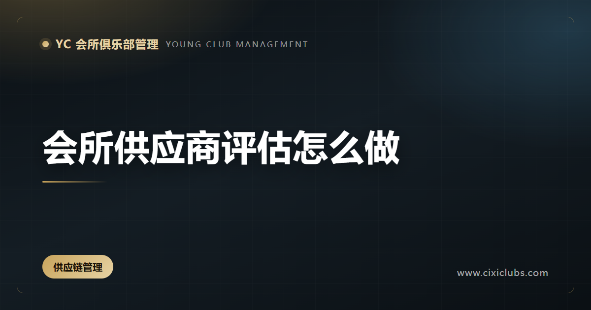
会所供应商评估怎么做
供应商管理不能只在价格上比较。会所采购涉及食品安全、工程设备、清洁服务、活动执行和会员体验，任何环节不稳定都可能直接暴露在服务现场。评估供应商时，应同时看质量、响应、合规、交付和长期合作能力。 先明确每类供应商的关键要求。产品类关注规格、批…
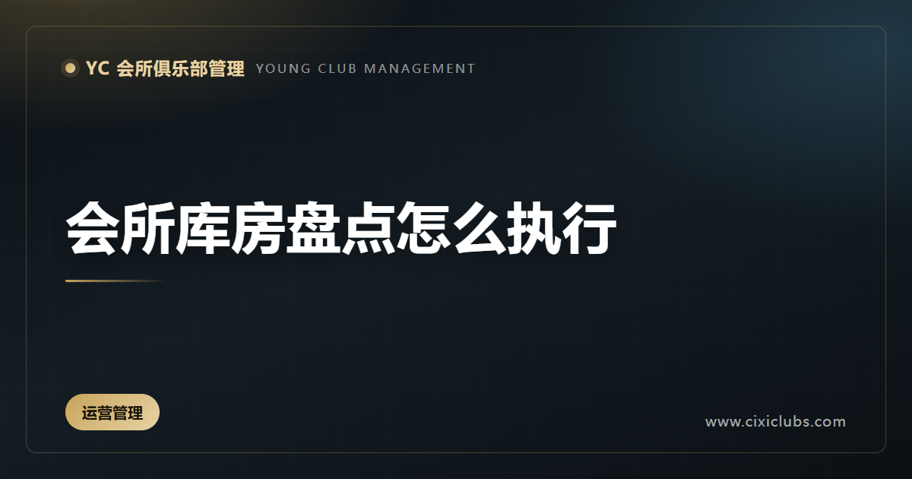
会所库房盘点怎么执行
库房盘点不是月底临时清点数量，而是验证采购、领用、库存和成本记录是否一致。会所物品种类多，既有客用品、餐饮物料，也有工程耗材和活动物资。若账实长期不符，容易出现重复采购、物料过期和责任不清。 盘点前应冻结非必要出入库，整理货位并统一计量单位…
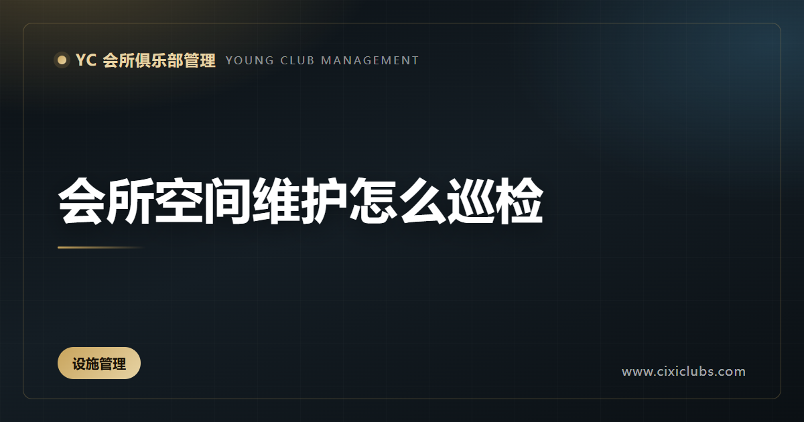
会所空间维护怎么巡检
会所空间品质来自持续维护，而不是开业时的一次装修。大堂、走廊、餐厅、康体区和卫生间都在被高频使用，灯光、气味、温度、清洁和小破损会共同影响会员感受。巡检的任务，是在问题影响体验前发现它。 巡检路线应覆盖会员主动线和后台支持区，并区分日常查看…
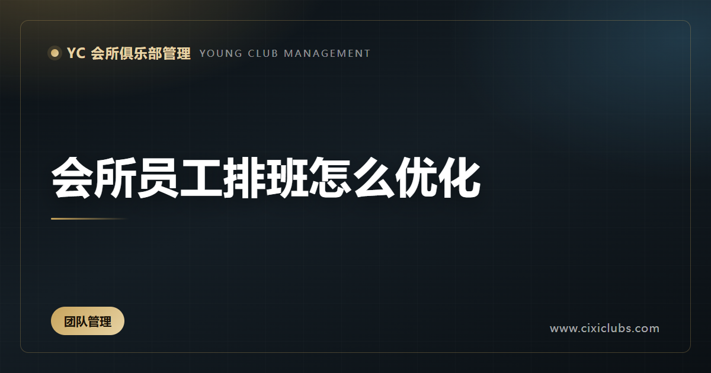
会所员工排班怎么优化
会所排班既要覆盖服务高峰，也要照顾员工状态。只按固定班次安排人员，容易出现高峰缺人、低峰闲置；完全依靠临时调度，又会增加沟通成本和疲劳。合理排班应把会员流量、岗位能力、活动安排和员工技能放在同一张表里。 排班前先识别关键时段和关键岗位。前台…
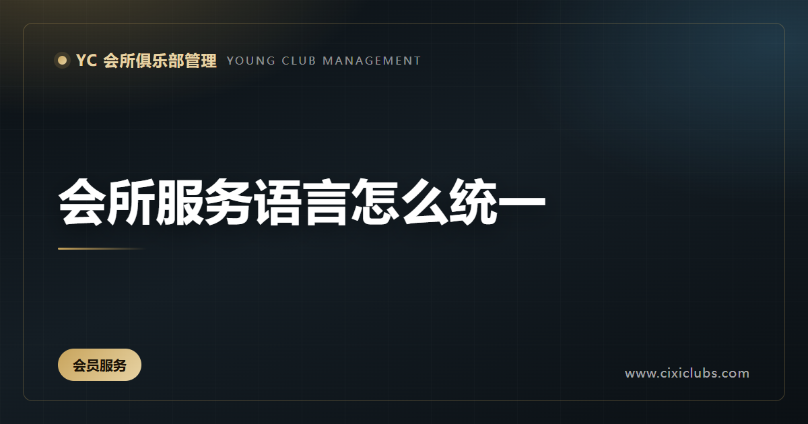
会所服务语言怎么统一
会所服务语言不是背几句礼貌用语，而是让员工在不同场景里表达同一种分寸。会员走进大堂、进入餐厅、使用康体设施或遇到问题时，听到的表达应当清楚、克制、一致。语言统一的目的，是减少误解，让会员感受到稳定的服务标准。 首先要把常用场景列出来，包括迎…
会所客服交接怎么执行
会所服务跨班次连续发生，交接不清会让会员被迫重复说明问题。前台、管家、餐饮、康体和工程之间都可能需要传递信息，交接不是简单说一句“有事群里说”，而是把未完成事项变成清楚的任务。 有效交接先确认事实，包括发生时间、会员诉求、现场情况、已经采取…
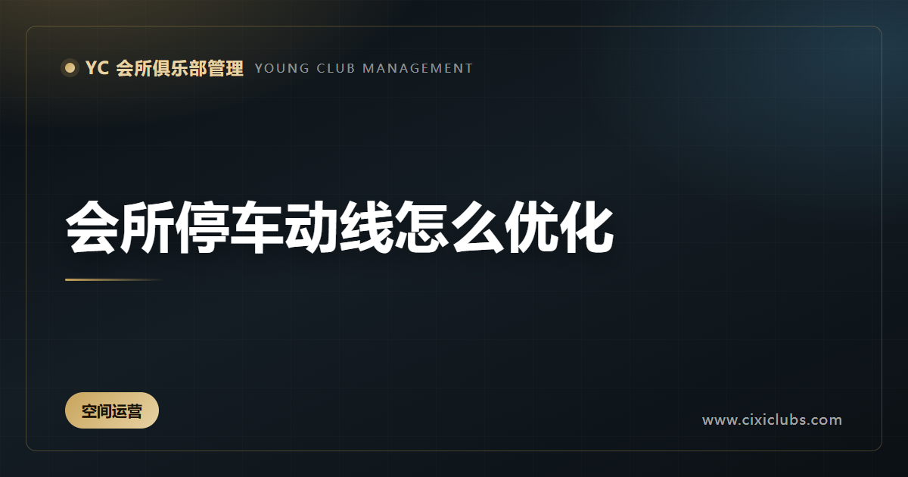
会所停车动线怎么优化
会员对会所的第一印象，往往从进入停车场开始。入口是否好找、车位是否清楚、步行路线是否安全、雨天是否方便，都会影响到店心情。停车动线优化不是增加几个标识，而是把驾驶、下车、步行和接待连成一段顺畅体验。 先按不同人群梳理路线，包括首次到访、常客…
会所外包团队怎么管理
保洁、安保、工程和部分专业服务常由外包团队承担。外包不等于把责任转走，会员看到的仍然是会所统一形象。若合同只写工作范围，没有明确现场标准、沟通方式和替换机制，问题往往会在最接近会员的地方出现。 合作开始前，应让外包人员了解会所定位、区域规则…
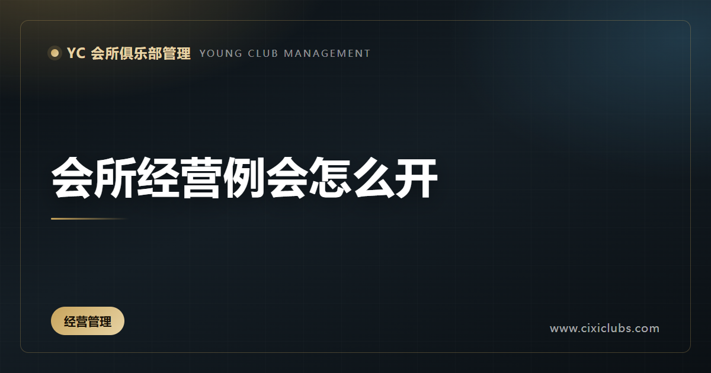
会所经营例会怎么开
经营例会的作用是让团队围绕事实做决定，而不是轮流汇报做了什么。会所每天都有大量现场信息，如果例会只谈感受，问题会停留在表面；如果只追数字，又容易忽略服务和安全。 会议前发出统一数据包，包括会员到访、活动执行、收入结构、成本变化、投诉和未完成…
会所餐饮菜单怎么更新
菜单更新不是简单换几道菜，而是根据会员偏好、出品能力、季节供应和经营目标重新安排选择。菜单长期不变化，会让老会员失去兴趣；频繁追新但执行不稳，又会增加采购压力和后厨出错率。 更新前先看真实数据，包括点单结构、复购情况、退菜原因、会员反馈和食…
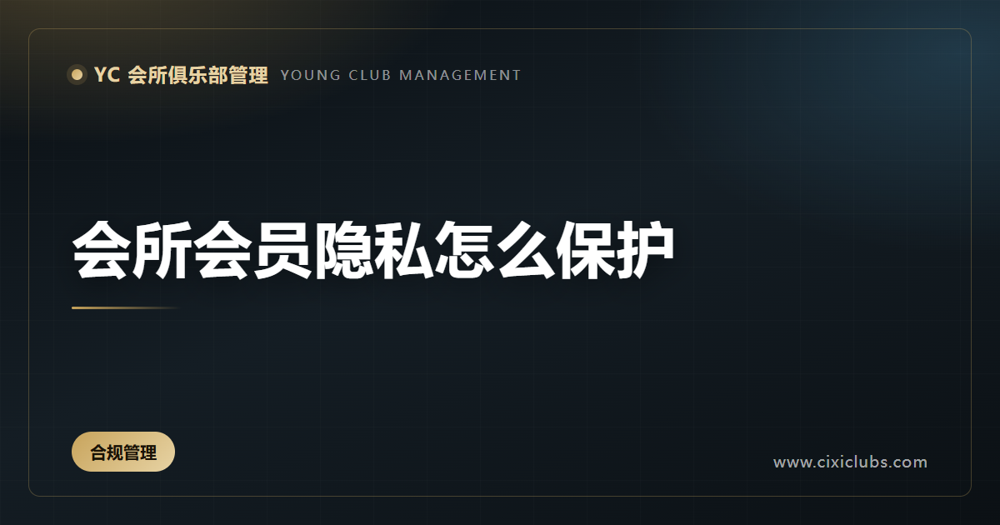
会所会员隐私怎么保护
会所掌握会员的联系方式、到店习惯、消费记录和家庭信息，这些内容既是服务基础，也是必须严格保护的责任。隐私管理不能只依赖员工自觉，而要从权限、流程、培训和异常处理建立边界。 首先做信息分类。不同岗位只访问完成工作所需的信息，前台、销售、管家和…
会所会员回访怎么做
会员回访不是例行询问“体验如何”，而是持续理解会员关系的过程。有效的回访要结合到店记录、服务偏好、活动参与和未解决问题，让会员感到会所记得他的需求，而不是只在续费前才出现。 回访前先明确目的：了解新会员适应情况、跟进投诉处理、邀请合适活动、…
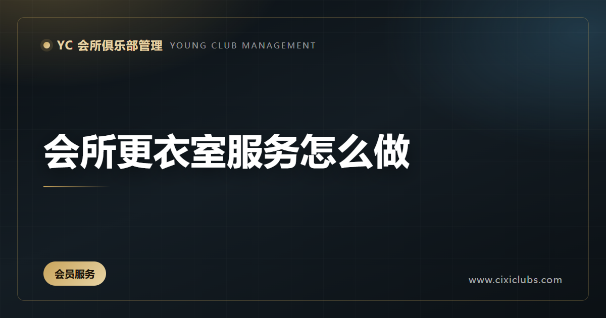
会所更衣室服务怎么做
更衣室是会员放松和转换状态的空间，也是会所最容易忽视的服务细节。会员在这里对清洁、隐私、秩序和安全感非常敏感。服务标准不能只停留在打扫频率，而要覆盖进入、使用、清洁、遗失处理和异常响应。 首先保证空间状态稳定。地面、台面、镜面、储物柜和淋浴…
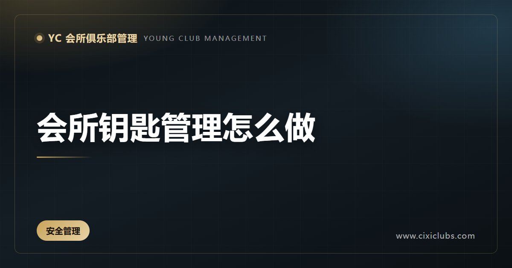
会所钥匙管理怎么做
钥匙看似是小事，却直接关系到设备、会员隐私和财产安全。会所区域多、门类复杂，涉及办公区、库房、设备间、贵宾室和应急通道。若领用、归还和授权没有记录，出现异常时很难追溯，也容易让员工形成随意借用的习惯。 首先建立钥匙清单，标明钥匙对应区域、保…
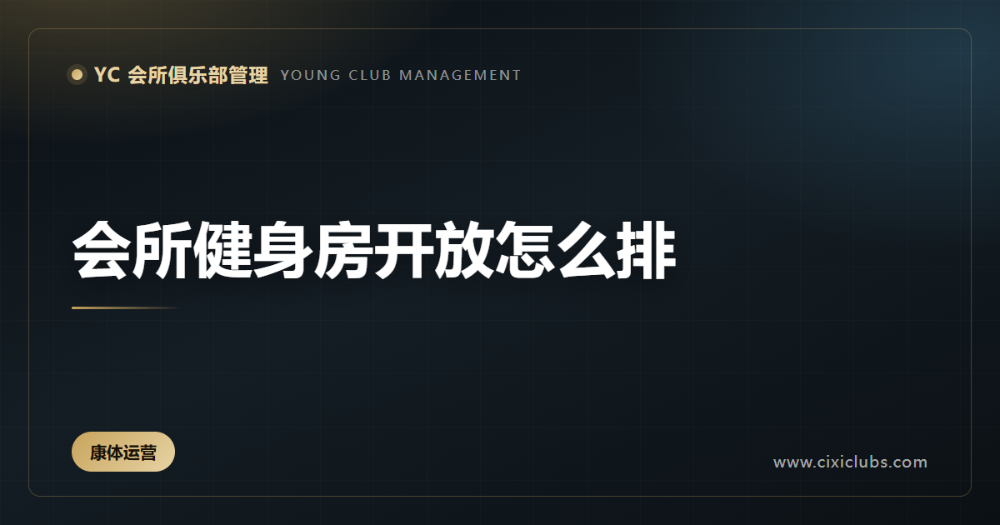
会所健身房开放怎么排
健身房开放安排要同时考虑会员习惯、设备容量、教练配置和安全责任。开放时间过短会影响使用，开放过长却缺少现场支持，又会增加设备损坏和意外风险。排期应以内场实际承载能力为基础。 先观察不同时段的到店规律，并区分自由训练、私教课程、小团体课和活动…
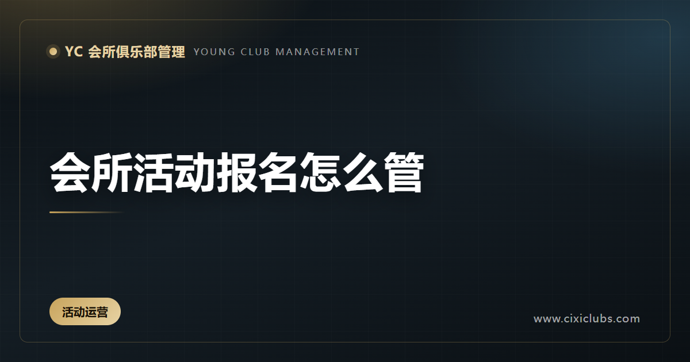
会所活动报名怎么管
活动报名看似只是收集名单，实际决定了现场体验、成本控制和会员公平。报名入口、资格确认、名额管理、变更通知和现场签到如果各自处理，很容易出现重复报名、临时缺席和现场拥挤。 活动发布前要明确适合人群、时间地点、费用、取消规则和必要提醒。会员报名…
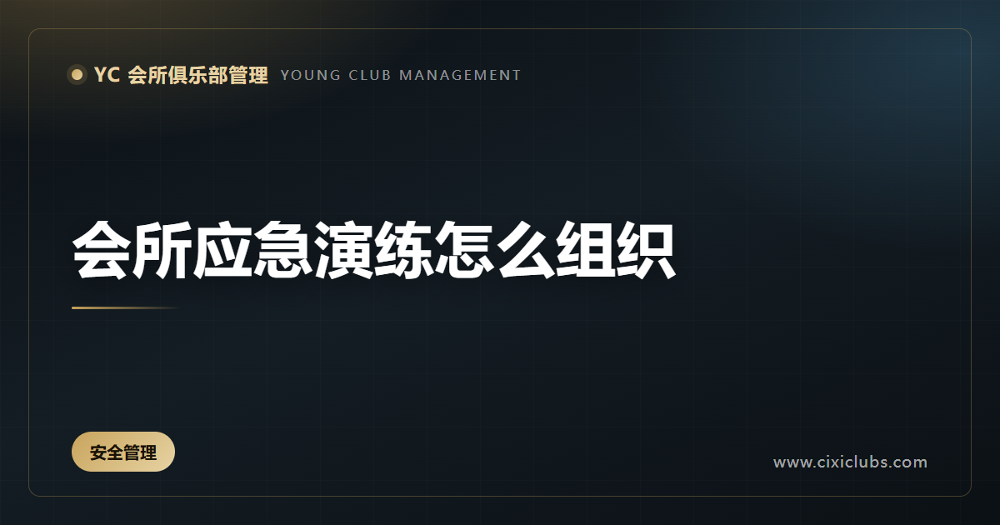
会所应急演练怎么组织
应急预案如果只放在文件里，真正发生事件时很难发挥作用。会所人员流动、空间复杂、会员活动密集，需要让员工在接近真实的场景中知道谁负责判断、谁负责疏散、谁负责沟通、谁负责记录。 演练前先确定场景，例如会员身体不适、设备异常、火情警报、重点区域停…
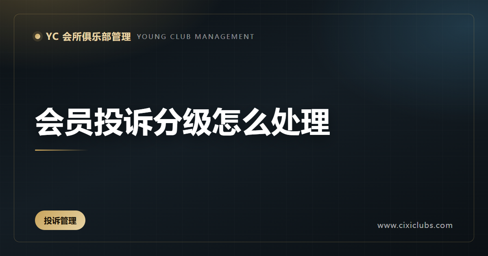
会员投诉分级怎么处理
投诉管理的重点不是把问题压下去，而是尽快识别影响范围，安排合适的负责人，并让会员知道事情正在被处理。不同投诉的紧急程度、影响对象和风险不同，如果全部按同一个流程处理，既会拖慢重要问题，也容易让普通问题过度升级。 会所可以按影响程度建立分级机…
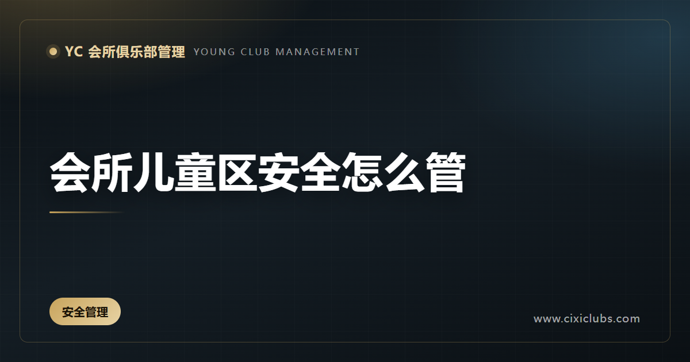
会所儿童区安全怎么管
儿童区不是缩小版的成人空间。孩子活动方式、身高和风险判断都与成人不同，安全责任也不能简单交给家长或一名现场员工。会所需要从空间、设备、人员、登记和应急几个方面建立完整管理。 空间上要检查边角、地面、护栏、插座、玻璃、门窗和高低差，避免可攀爬…
会所年度培训怎么规划
年度培训不是把课程表排满，而是围绕岗位能力缺口和经营任务设计学习节奏。会所的服务标准、设备知识、安全要求、会员沟通和管理能力都需要持续训练，但不同岗位不应使用完全相同的课程。 先做能力盘点。结合岗位职责、现场问题、投诉类型、员工反馈和业务变…